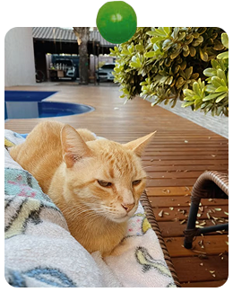

Christine Dao
Design Major & UX/UI Design Minor
Hello and thank you for visiting my blog! My name is Christine Dao and I've spent a little over a year going to various study spots to find the best ones in San Jose. I was able to eventually compile this list and I hope that you can find your next best study spot with it!
I am currently attending school at University of San Francisco and travel one hour down to San Jose to work every weekend. I hope to one day travel to more countries and experience amazing sights! My current hobbies are golfing, photography, riding motorcycles, crafting, and digital design!

